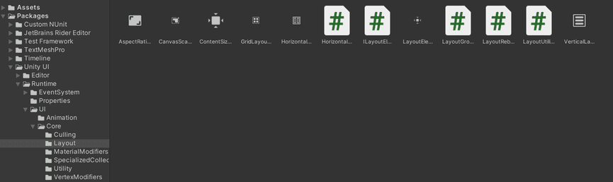
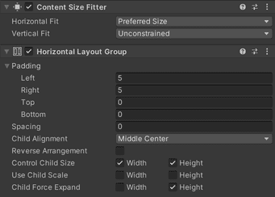

前言
本文将从 UGUI 布局系统的技术细节、辅助工具类和使用经验方面进行进一步讲解，结合开发过程中一些常见的需求来寻找可行的解决方案，这一步通过实践解决具体需求考察我们对于布局系统的理解程度，是否能够通过现有的布局组件来解决问题。本文不会详细讲解现有布局组件的具体使用方式和相关参数含义，具体请参考官方文档。
技术细节
布局系统的部分实现细节可以参考 LayoutRebuilder.cs 这个官方脚本的源码，其中的 Rebuild() 方法就展示了布局系统的工作原理。它会按照以下四行代码的执行顺序完成布局任务，首先计算所有 ILayoutElement 的宽度，然后通过 ILayoutController 设置水平属性，再计算所有 ILayoutElement 的高度，最后通过 ILayoutController 设置垂直属性。
1
2
3
4
5
6
7
| PerformLayoutCalculation(m_ToRebuild, e => (e as ILayoutElement).CalculateLayoutInputHorizontal());
PerformLayoutControl(m_ToRebuild, e => (e as ILayoutController).SetLayoutHorizontal());
PerformLayoutCalculation(m_ToRebuild, e => (e as ILayoutElement).CalculateLayoutInputVertical());
PerformLayoutControl(m_ToRebuild, e => (e as ILayoutController).SetLayoutVertical());
|
官方的 LayoutElement 组件声明如下：
1
| public class LayoutElement : UIBehaviour, ILayoutElement, ILayoutIgnorer {......}
|
如果你想要将自定义的 UI 组件纳入布局系统，则可以像 Text 或 Image 组件那样实现 ILayoutElement 接口，如下：
1
| public class Text : MaskableGraphic, ILayoutElement {......}
|
官方的布局组组件都直接或间接继承自 LayoutGroup 这个基类，它既作为布局元素，也作为布局控制器，如下：
1
| public abstract class LayoutGroup : UIBehaviour, ILayoutElement, ILayoutGroup {......}
|
如果你想要扩展控制自身属性的布局控制器，就可以参考 Content Size Fitter，如下：
1
| public class ContentSizeFitter : UIBehaviour, ILayoutSelfController {......}
|
关于扩展接口和具体实现细节可以直接参考 UGUI 的源代码，如下：

辅助工具类
这是一个用于驱动 RectTransform 组件的工具类，也可以理解为属性托管，通过该组件我们可以禁止开发者在 Inspector 视图中去手动修改布局元素的 RectTransform 组件的属性，例如位置、大小等，因为这些理应由布局系统来设置，同时也避免了被驱动值的更改导致场景文件更改的问题。在扩展或开发自定义的布局组件时，这个工具类是必要的，具体可参考官方文档。
LayoutRebuilder
顾名思义，它是一个用于调用布局重建的工具类，在某些时候布局元素出于某些原因需要重新分配布局空间时，可以通过这个工具标记需要重新布局的 RectTransform，也可以立即触发重新布局（需要考虑性能损耗）。具体可参考官方文档。
LayoutUtility
布局工具类，它能够快速获取布局元素尺寸或其它单个属性的 Minimum、Preferred、Flexible 值。在自定义扩展中，它同样是实用的。具体可参考官方文档。
常见需求和解决方案
水平自适应按钮
需求： 按钮中显示文本内容，但是文本内容是不固定的，如何让按钮框能够根据文本内容而进行水平自适应？
答案： Button 所挂载元素添加 HorizontalGroup 和 Content Size Fitter 组件。
具体分析： 首先我们要明确这个 UI 元素的构成，它可以看作由 Button、Text 两个组件组成，且 Text 作为 Button 的子元素。首先文本内容是不固定的，也就是说 Text 元素的尺寸（这里只考虑宽度）需要是可变的，同时 Text 本身实现了 ILayoutElement 接口的，所以它属于布局元素，而布局元素的属性应该由布局控制器控制，在不加入控制器的情况下，当文本内容所需尺寸超过父元素所能提供的尺寸时，Text 要么采取溢出要么采取截断机制，而无论是哪种都反映出父元素所能提供的布局空间已不能满足子元素的所需了，所以父元素需要改变自身的属性，所以我们给它挂载一个 Content Size Fitter 组件，用来控制自身属性，不用着急马上去设置控制器的属性，等添加完所需的组件后再统一设置。父元素的适配器作为布局控制器需要布局元素信息，而它的控制对象又只有父元素，父元素的 Button 并不是布局元素组件，所以父元素没有能够提供布局元素信息的组件。而 Text 元素需要控制器控制它的尺寸变化，同时父元素又需要一个布局元素组件提供信息，那么我们想到的就是布局组了，它既能控制属性也能作为布局元素，而我们需要的是水平自适应，那么就给父元素挂载一个 HorizontalGroup 组件即可。

带图标的自适应文本框
需求： 有一个文本框，无论文本框尺寸怎么改变，始终有一个图标与其左侧保持相对位置。
答案： Text 所挂载元素添加 Content Size Fitter 组件，添加一个挂载 Image 组件的子对象。
具体分析： 文本框需要自适应，Text 组件是布局元素组件能够提供信息，所以只需要一个 Content Size Fitter 控制器控制自身属性即可。图标可以利用 RectTransform 组件的 Anchors 来锚定位置，使得图标始终保持在文本框左侧的相对位置，Anchors 的 Min 和 Max 都设为 (0, 0.5)。
总结
通过查阅 UGUI 源代码可以帮助我们更深入地了解和学习它的布局系统，它提供的辅助工具类也是我们自定义扩展布局组件的好帮手，这都是我们进行布局系统自定义扩展的重要前提。常见需求和解决方案让我们通过具体分析去纠正理解并巩固知识，将知识运用于实践是进步的重要方式。
系列文章